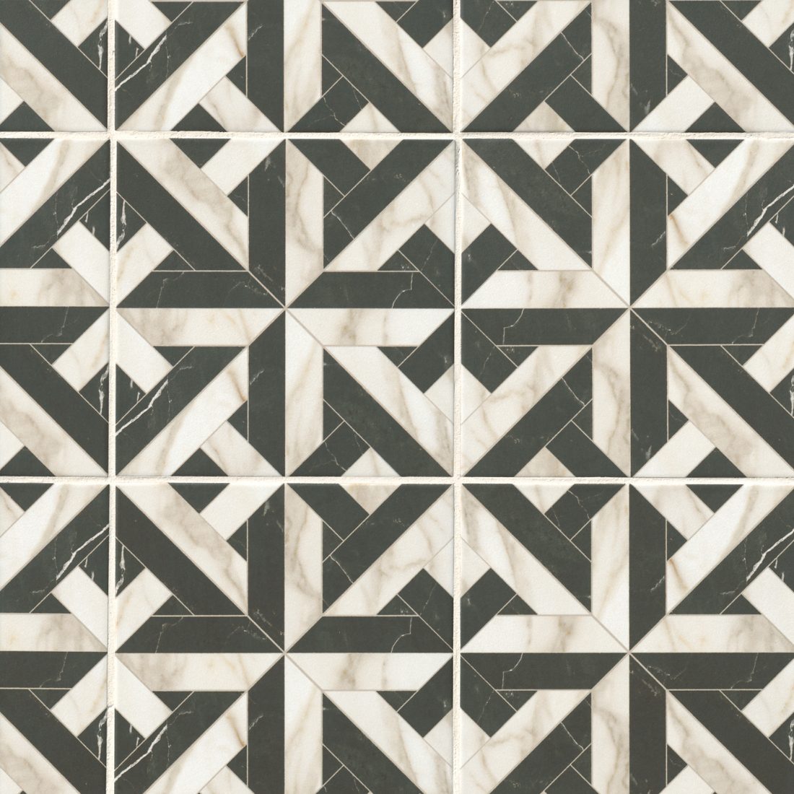
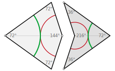
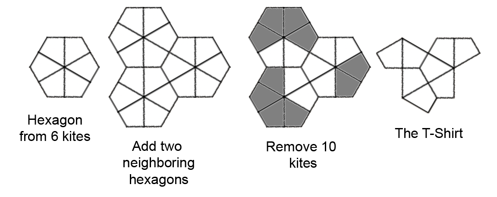
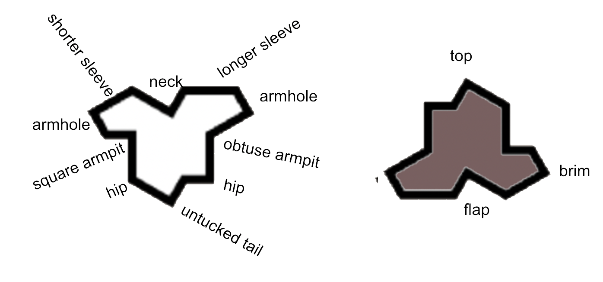
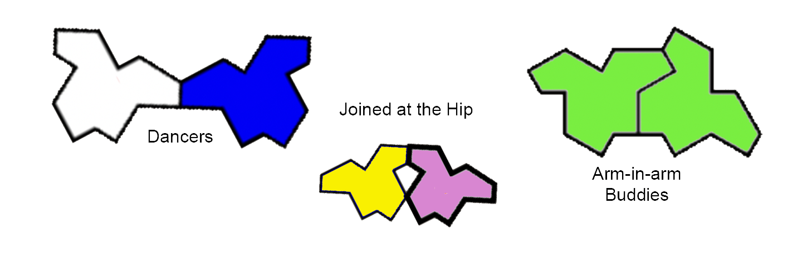
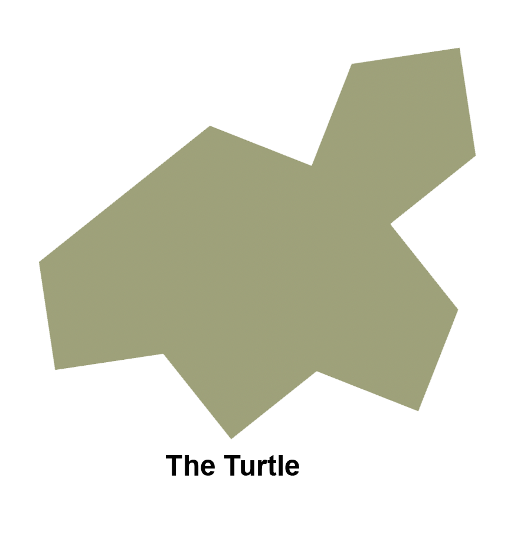
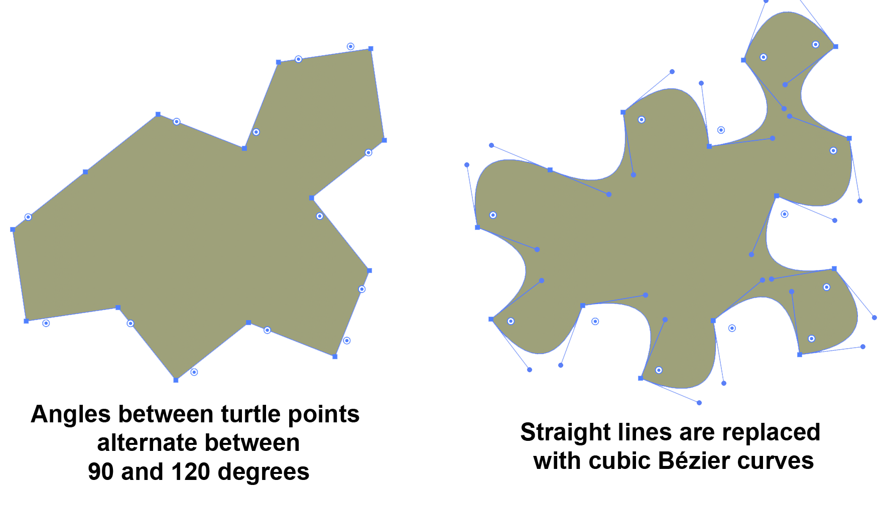
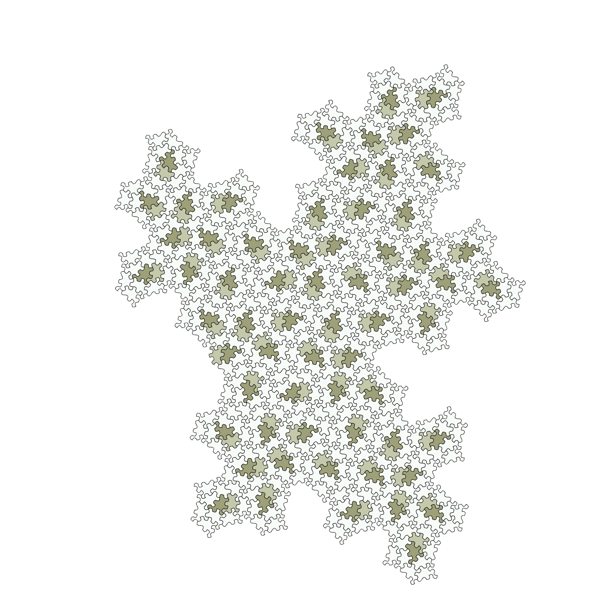

Learning More
- What's the Big Deal With This?
- What is this New Mysterious Shape?
- And Now Even Better Shapes?
- Further Reading
- Let's Play the Puzzle!
What's the Big Deal With This?
Our brains are wired for patterns. We see faces in clouds, or toast. When we see a tile wall or bathroom floor, we look to see how the tiling pattern repeats. It almost always does.
Occassionally we fail to figure out how something repeats. We just know it does, but we can't figure it out. This is a much more interesting situation than a typicall bathroom floor. We're drawn to these situations. If we see a wall where the shape of the tiles is odd and we can't figure out if it will or won't repeat, we get sucked in and stare. Maybe? no? what if? We keep looking for the pattern.
Even mathematicians (yes those people), get involved and do their best to tell us - will this or that kind of tile, if laid out a certain way, start to repeat? Usually they would figure out that any shape that can "tile a plane" (which means be laid out next to each other with no gaps, forever) would be "periodic", meaning it would repeat.
But in the 1960's a math PhD student named Robert Berger created a set of 20,426 tiles that could tile the plane without repeating. It was the first known aperiodic tiles but with 20 thousand different tiles it wasn't very useful. Then Berger created a set of 104 tiles that could aperiodically tile a plane. In 1996 Karel Kulick did it with just 13 tiles and the race was on.
{kind=link}
 The Penrose tiles, a kite and dart
In the 1970s, with just these two tiles (the left one called a 'kite', the right one a 'dart') physicist Roger Penrose produced this marvel. The two shapes by themselves weren't necessarily going to tile aperiodically in every combination. But with the added colored arcs drawn on the shapes, and a requirement to connect the arcs smoothly, it forced an aperiodic tiling and made striking art.

Then in 2021, an amateur mathematician (a self-described hobbyist), David Smith, of East Yorkshire, England, discovered The Einstein. Here Einstein means "one stone" or one tile (not Albert). Together with David Smith, Joseph Samuel Myers, Craig S. Kaplan, and Chaim Goodman-Strauss they proved that this one shape could tile an infinite plane, aperiodically. This one shape, (including it's reflection) was the first time aperiodic tiling was done with only a single shape. It was an astounding discovery and proof.
What is This New Mysterious Shape?
David Smith called this shape a hat. To him it looked like a fedora. The shape is classified as a "polykite", which means its composed of multiple kites. One of Penrose's two shapes was also a kite. A kite is a shape formed by drawing a line from the midpoint of each side of a hexagon to the center of the hexagon. A hexagon has 6 kites. I must have been upside down when I first read about Smith's discovery, because I saw a shirt. The T-Shirt (or upside-down hat) shape comes from a combination of 8 kites taken from 3 neighboring hexagons.

As I played with the shape I saw how hard it was to make it tile. I thought it would make a great jigsaw puzzle. It was even hard just to wrap my head around which way it was oriented and how two or more could be put together. For me it was more helpful to think about it as a T-Shirt because my shirt vocabulary is much larger than my hat vocabulary. It's easier to understand things you can talk about, whether alone ...
... or in combinations. T-Shirt vocabulary is rich. And who ever saw two upside down hats dancing, anyway?
And Now There Are Even More Interesting Shapes
Soon after sharing the "hat" shape with his colleagues, David Smith discovered a second shape which he suspected could also tile an infinite plane aperiodically. He called this shape a turtle.
His colleagues realized the hat, the turtle, and an infinite array of shapes in between, were all related and could all equally tile an infinite plane aperiodically. They could do so, however, only if the reflection of the shape was included. This means if one were tiling a bathroom floor, two different tiles would actually be needed.
The animation below shows the continuum of shapes including the hat (or t-shirt) and the turtle and many in between all of which tile an infinite plane aperiodically. The dark blue shape is the reflected (or upside down) form of the other shapes.
 continuous family of shapes exhibiting aperiodic tiling
continuous family of shapes exhibiting aperiodic tiling
Researching these shapes further, the team found one more variation based on the turtle. It's called the "spectre" because it looks a bit like a ghost. The image below shows the steps to go from a turtle to a spectre. Notice that the angles of the lines between the points on the turtle alternate between 90 and 120 degrees. A spectre replaces the lines between points with cubic Bézier curves that retain the alternating 90, 120 degree angles at the points.
And with the discovery of the spectre shape, the race for a true einstein was complete. This single shape is a "chiral aperiodic monotile", meaning it can tile an infinite plane, without repeating and it is truly just one shape, reflection not required. 
Further Reading
- Hat Tile Project Homepage, including links to Pre-Print Publication and the Hat Supertile Generator
- Spectre Tile Project Homepage, including links to Pre-Print Publication and the Spectre Supertile Generator
- Quanta Magazine: Hobbyist Finds Math’s Elusive ‘Einstein’ Tile
- NYTimes: Elusive "Einstein" Solves a Longstanding Math Problem
- NYTimes: With a New, Improved ‘Einstein,’ Puzzlers Settle a Math Problem